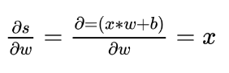

Gradient Descent, Feedforward and Backpropagation
Let’s see three fundamentals concepts of Deep Learning: the Gradient Descent, Feedforward and Backpropagation steps.
Versão em português disponível em 26 de Junho aqui.
Gradient Descent
Gradient Descent(GD) in one of the most common algorithms that help the Neural Networks to reach the correct values of weights and bias. To illustrate this method, let’s take a look at a Logistic Regression model. In this model, we have a loss of L(ŷ,y), where it defines how far the predicted output is from the correct output. If we sum all the losses during the training phase and average them, we will get the Cost Function J(w,b). What is usually used for regression problems is the following:
Since we want to train our model to be as much accurate as possible, it is natural that this method tries to minimize the Cost Function J(W,b) in each step. So the cost function measures how well the parameters W and b are performing in the training set, iteratively updating the weights and bias trying to reach the global minimum in such function. And what is a global minimum? As shown in the figure below, the global minimum of a function J(theta1,theta2) is the values of theta1 and theta2 that produce the minimum value on J. Here J is equivalent to the height of the plot. Notice that there is the so-called local minimum, which sometimes tricks the model making it believe it has achieved the global minimum. One can be seen at theta1 and theta2 equals 0.8.
Minimizing the Cost Function, a Gradient Descent Illustration. Source: Stanford’s Andrew Ng’s MOOC Machine Learning Course
So, the minimum is dependent on the cost function J chosen, and to achieve it, we must first define some starting point for W and b and try to go downhill in the direction of the steepest descent in the function. To make it easy to understand, let us take a look at just one variable. If we are trying to minimize the function J(w), as shown below, and we initialize W with a very high value on the X-axis, what are the next steps?
To update the weight W and the bias b, the gradient descent rule is as follows:
To move it to the minimum, we first need to know which direction we should follow. Should we increase or decrease W? This can be achieved with the derivative of the point. A derivative is a calculus tool that is equal to the slope of the function at a given point. In other words, it tells us exactly what we need to know: the direction we should follow. When the function is increasing the derivative is positive, when the function is decreasing it is negative and when it is zero it means that it reached a local or global minimum. In the following figure, the derivative in this point is positive and so the dW value will be subtracted from W, in the formula above, and we are going to move left.
On the other hand, if W was a low number on the left side of the figure, the derivative would be negative and the number dW would be added to W, moving it to the right. The alpha term is called Learning Rate and it defines how big those steps would be. Defining it too big could make the function pass through the local minimum and start to diverge.
This is a simple convex function analyzed in a 2D graph. Although the concepts and steps remain the same, depending on the problem these functions could get pretty complex and have multiple dimensions, and it is even harder to visualize it. As you may see later, the Gradient Descent is just one of several Optimization Algorithms such as Adagrad, Adadelta, RMSProp, Momentum, and Adam.
So now we have an optimization algorithm to update W and b values to get our model output closer to the expected output. Through the Forward Propagation, we will pass through the model and calculate an output value (the prediction), compare this value with the expected output, and find an error. With this, we will transmit this error backward using Backward Propagation and with the gradients (derivative values) to update the values for W and b, making the whole model closer to the cost function’s global minimum.
Feedforward
It is the phase we calculate the model output, so we can understand how accurate it is. For illustration, lets take a network with just one hidden layer. In practice we may have several hidden layers and multiple output values. We will have to calculate the hidden states and then find the output values based on this states. Here the hidden layer and the outputs are matrices and we denote the layer by adding square brackets, i.e. [1] it’s the first layer. To calculate the predict output (ŷ) in the following 2 layers network, we must first find hidden values here called z.
Each hidden neuron is divide into two operations: the linear function y = x*w + b and the application of an activation function sigma. These steps are named s and z, respectively. In this example, we are going to set b, or bias, to zero to simplify the explanation. We use activation functions to make sure these values do not increase too much. It will make sure the outputs are between 0 and 1 or -1 and 1 (check this post for more about activation functions). Furthermore, these functions allow the network to represent nonlinear relationships between inputs and outputs.
So initializing randomly the weights W and choosing TanH as an activation function sigma, we have:
We will assume that in this particular training step, we are inputing x1 and x2 equals 1 and are expecting the model to output 1 as well. As state before, the first step is to calculate the result of the linear function and find s1 and s2 from the first layer [1]. Then, the results are passed through an activation function to serve as inputs for the next layer.
With z1 and z2 in hands, we can now calculate the input from the next layer, in this case, the output layer. Multiplying these values by the weights and passing through the tanh activation function, we finally find our predicted output:
In the output layer, sometimes we use different activation functions, or none, depending on the application. If it was a classification problem, we could use a Softmax here.
With the predicted output, we can now calculate the error. The error can be as simple as the predicted minus the expected output (ŷ - y), or the squared error = (y_pred - y)². The Mean Squared Error (MSE) is sometimes used in regression problems, while the cross-entropy is used for classification problems. This function is called the Loss Function and once again, it depends on the problem we are trying to solve. That represents how good our model is performing, lower the value, closer we are to the expected output value.
We will use the MSE here for sake of simplicity since MSE makes the gradient descent not work well. In logistic regression is common to use the loss function demonstrated at the beginning of this post, because it gives us a convex optimization problem.
Backpropagation
It is the phase we take the error and adjust the weights so in the next iteration we have a small error. We must then go back adjusting the weights based on this MSE error. The backpropagation step is the SGD with the Chain Rule from Calculus. With partial derivatives, we can understand how the error is impacted by each weight separately.
The chain rule and partial derivatives
The chain rule is actually very intuitive: if we have A, which apply a function f to a variable x and B, where another function g applies a function over f(x), the chain rule says that if we want to find the partial derivative of B with respect to x we should multiply the intermediary partial derivatives.
Updating the weights with backpropagation
Our main focus in Machine Learning is to update the weights so that the model gives us better predictions. The general rule for updating the weights and bias was showed before, but for this example we are setting ‘b’ to zero, so we only have to update W:
So, to achieve this we need to find the partial derivative of the Loss Function L(ŷ, y) with respect to W, and this update function can be applied to any weight in the figure above. In this post, we are not going to dive deep in how derivatives works and I’ll show you only what is the value of certain derivative. Although we must understand how all this process works, the most common Deep Learning Frameworks already had this implement and would be very rare the case you are going to code this.
For the sake of illustration, let’s find the new value to w12. And for that, lets state two things: we chose the Median Square Error as loss function and the hyperbolic tangent as activation function. The derivative of z[2] with respect of s[2] is equal the derivative of the activation function tanh, so:
The first step is to calculate how the loss was influenced by the activation step in z[2]. We achieve this finding the derivative of the loss function with respect to z[2]:
Next we calculate how the loss was impacted by s[2], through the chain rule. This is equal to the partial derivative of the previous case, multiplied by the derivative of z[2] with respect of s[2], which is the derivative of the activation function state above.
And finally, to find the derivative we were looking for, to update w12, we keep following the chain to find the derivative of the cost function with respect of w12. Here ds/dw is equal to the derivative of the linear function (s) with respect a w, where x is the term from W is multiplied for. In the weight w[2]12 is z[1]1, and in the w[1]11 is x1, for exemple.

Now we have the term needed (dL(ŷ,y) / dW) to update the weight w[2]12. This value is called the gradient and tells us in which direction and how big this step should be.
And choosing a learning rate alpha of 0.1, the new value for the weight w12 would be:
This would change the weight so that the error would be lower in the following iteration. Then we would update again this weight in a iterative process until the model as a whole has the right weights to make a prediction. I won’t be showing all the weights numerically, but here are all the derivatives needed to calculate all the weights:
Next steps
Awesome! Now you know a little bit more how Deep Learning models work under the hood. There are amazing resources online where you can continue to learn and create a deep understanding of these concepts. The Andrew Ng MOOC is the go-to course to understand deeply the theoretical part of Deep Learning and have assignments to consolidate your knowledge through programming exercises.
Would you like to receive the most important news and trends in AI in just one email every end of the month? Subscribe below and I’ll send you the 10 most important news in Artificial Intelligence.
Subscribe to Edge AI Guru
Get the latest posts delivered right to your inbox